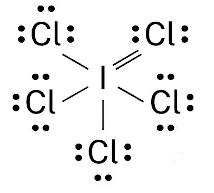

1) How many moles of La are contained in 635 mg of La?
A) 0.000219 mol
B) 88.2 mol
C) 0.00457 mol*
D) 4.57 mol
To determine the number of moles, we need to divide the given mass of La by its molar mass.
The molar mass of La is approximately 138.9 g/mol.
First, let's convert the given mass from milligrams (mg) to grams (g): 635 mg x 1 g/1000 mg = 0.635 g
Next, we can calculate the number of moles: moles = 0.635 g x \( \frac{1 mol}{138.9 g} \) = (0.635)/(138.9) mol ≈ 0.00457 mol
2) Which class of the electromagnetic spectrum is used in remote controls and has a wavelength a little longer than visible light?
A) x-rays
B) ultraviolet radiation
C) infrared radiation*
D) radio waves
X-rays are used to visualize bones and internal organs UV or ultraviolet waves cause sunburns Microwaves are used to cook food in a common kitchen appliance (a microwave) by vibrating water molecules to produce heat Radio waves are used to transmit messages over long distances
3) Which of the following colors has the lowest wavelength
A) red
B) blue
C) orange
D) violet*
ROY G. BIV is a mnemonic for remembering the order of visible light from lowest energy, lowest frequency to highest energy and highest frequency or from longest wavelength to shortest wavelength.
Lowest energy, lowest frequency, highest wavelength Red Orange Yellow Green Blue Indigo Violet Highest energy, highest frequency, shortest wavelength
It can also help to remember that infrared (which is right by red) has low energy, low frequency, and a high wavelength, and that ultraviolet (which is right by violet) has high energy, high frequency, and a short wavelength.
4) Which of the following sets of quantum numbers is possible?
A) (2, 2, +2, -\( \frac{1}{2} \))
B) (5, 3, +3, +1)
C) (2, 1, +1, +\( \frac{1}{2} \))*
D) (3, 1, -3, +\( \frac{1}{2} \))
For a set of quantum numbers to be valid, the following relationships must be satisfied:
The principal quantum number (n) must be a positive integer (1, 2, 3, ...).
The azimuthal quantum number (ℓ) must be an integer ranging from 0 to (n-1).
The magnetic quantum number (mℓ) must be an integer ranging from -ℓ to +ℓ.
The spin quantum number (ms) must be either +1/2 or -1/2.
Let's evaluate the given sets of quantum numbers:
(2, 1, +1, +\( \frac{1}{2} \))
n = 2 (valid as it is a positive integer).
ℓ = 1 (valid as it is within the range of 0 to (n-1)).
mℓ = +1 (valid as it is within the range of -ℓ to +ℓ).
ms = +\( \frac{1}{2} \) (valid as it is either +1/2 or -1/2).
Therefore, this set of quantum numbers is valid.
(2, 2, +2, -\( \frac{1}{2} \))
n = 2 (valid as it is a positive integer).
ℓ = 2 (invalid as it is not within the range of 0 to (n-1)).
mℓ = +2 (valid as it is within the range of -ℓ to +ℓ).
ms = -\( \frac{1}{2} \) (valid as it is either +1/2 or -1/2).
Therefore, this set of quantum numbers is not valid due to the value for ℓ.
(3, 1, -3, +\( \frac{1}{2} \))
n = 3 (valid as it is a positive integer).
ℓ = 1 (valid as it is within the range of 0 to (n-1)).
mℓ = -3 (invalid as it must be within the range of -ℓ to +ℓ).
ms = +\( \frac{1}{2} \)(valid as it is either +1/2 or -1/2).
Therefore, this set of quantum numbers is not valid due to the value of mℓ being outside the allowed range.
(5, 3, +3, + 1)
n = 5 (valid as it is a positive integer).
ℓ = 3 (valid as it is within the range of 0 to (n-1)).
mℓ = +3 (valid as it is within the range of -ℓ to +ℓ).
ms = +1 (invalid as it must be either +1/2 or -1/2).
Therefore, this set of quantum numbers is not valid due to the incorrect value for ms.
Based on the numerical relationships between the quantum numbers, only the set (2, 1, +1, +\( \frac{1}{2} \)) satisfies the required conditions and is therefore valid.
5) Which of the following sets of quantum numbers is possible?
A) (2, 0, +0, +1)
B) (4, 2, +2, +\( \frac{1}{2} \))*
C) (4, 4, +4, -\( \frac{1}{2} \))
D) (5, 3, -5, +\( \frac{1}{2} \))
For a set of quantum numbers to be valid, the following relationships must be satisfied:
The principal quantum number (n) must be a positive integer (1, 2, 3, ...).
The azimuthal quantum number (ℓ) must be an integer ranging from 0 to (n-1).
The magnetic quantum number (mℓ) must be an integer ranging from -ℓ to +ℓ.
The spin quantum number (ms) must be either +1/2 or -1/2.
Let's evaluate the given sets of quantum numbers:
(4, 2, +2, +\( \frac{1}{2} \))
n = 4 (valid as it is a positive integer).
ℓ = 2 (valid as it is within the range of 0 to (n-1)).
mℓ = +2 (valid as it is within the range of -ℓ to +ℓ).
ms = +\( \frac{1}{2} \) (valid as it is either +1/2 or -1/2).
Therefore, this set of quantum numbers is valid.
(4, 4, +4, -\( \frac{1}{2} \))
n = 4 (valid as it is a positive integer).
ℓ = 4 (invalid as it is not within the range of 0 to (n-1)).
mℓ = +4 (valid as it is within the range of -ℓ to +ℓ).
ms = -\( \frac{1}{2} \) (valid as it is either +1/2 or -1/2).
Therefore, this set of quantum numbers is not valid due to the value for ℓ.
(5, 3, -5, +\( \frac{1}{2} \))
n = 5 (valid as it is a positive integer).
ℓ = 3 (valid as it is within the range of 0 to (n-1)).
mℓ = -5 (invalid as it must be within the range of -ℓ to +ℓ).
ms = +\( \frac{1}{2} \)(valid as it is either +1/2 or -1/2).
Therefore, this set of quantum numbers is not valid due to the value of mℓ being outside the allowed range.
(2, 0, +0, + 1)
n = 2 (valid as it is a positive integer).
ℓ = 0 (valid as it is within the range of 0 to (n-1)).
mℓ = +0 (valid as it is within the range of -ℓ to +ℓ).
ms = +1 (invalid as it must be either +1/2 or -1/2).
Therefore, this set of quantum numbers is not valid due to the incorrect value for ms.
Based on the numerical relationships between the quantum numbers, only the set (4, 2, +2, +\( \frac{1}{2} \)) satisfies the required conditions and is therefore valid.
6) Calculate the frequency of a photon (in Hz) with a wavelength of 174.7 nm.
A) 0.00172 Hz
B) 5.82x10-16 Hz
C) 1.14x10-18 Hz
D) 1.72x1015 Hz*
To calculate the frequency of a photon using its wavelength, you can use the following equation:
c = λ * ν
Where: c is the speed of light in a vacuum (3.00 x 108 m/s) λ is the wavelength of the photon in meters ν is the frequency of the photon in Hz
First, we need to convert the given wavelength of 174.7 nm to meters:
Now we can rearrange the equation to solve for the frequency:
ν = c / λ = (3.00 x 108 m/s) / (1.75x10-7 m)
ν ≈ 1.72x1015 Hz
7) Calculate the wavelength (in nm) of light that has a frequency of 5.82 x 1014 Hz.
A) 515 nm*
B) 0.00194 nm
C) 5.15x10-7 nm
D) 1.94x1013 nm
To calculate the wavelength (λ) of light, you can use the equation:
λ = c / ν
where λ is the wavelength, c is the speed of light in a vacuum (approximately 3.00 x 108 m/s), and ν is the frequency of the light.
First, let's convert the frequency given in Hz to 1/s since Hz and 1/s mean the same thing
Frequency (ν) = 5.82 x 1014 Hz = 5.82 x 1014 1/s
Now, we can calculate the wavelength using the equation:
λ = c / ν = (3.00 x 108 m/s) / (5.82 x 1014 1/s)
λ = 5.15x10-7 m
To convert this to nanometers (nm), we multiply by 10^9:
λ = 5.15x10-7 m x = \( \frac{10^9 nm}{1 m} \) 515 nm
8) Give the name for S2Cl2.
A) Disulfur dichloride*
B) Sulfur chloride
C) Sulfur (II) dichloride
D) Sulfur dichloride
Both S and Cl are nonmetals, so we will need to put a Greek prefix before the name of each element, then give the second element an -ide ending. However, mono- is dropped from the beginning in cases where there is only 1 of the first element in the compound. Since there are 2 S and 2 Cl, the name is Disulfur dichloride.
9) What is the empirical formula for Hg2(NO3)2?
A) Hg(NO)3
B) HgNO3*
C) Hg2NO6
D) Hg2(NO3)2
An empirical formula represents the simplest ratio of elements present in a compound. It shows the relative number of atoms of each element in a compound without specifying the actual number of atoms. To get the empirical formula you need to divide the subscripts in the equation (Hg2(NO3)2) by their greatest common divisor. In this case 2 and 2‚ 6‚ 12 and 6 are divisible by 2, which gives HgNO3 as the empirical formula.
10) Give the formula for Iron (II) nitrate
A) FeNO3
B) Fe2NO3
C) Fe(NO2)2
D) Fe(NO3)2*
The Roman numeral (II) tells us that the charge on Iron is +2. From a list of polyatomic ions we can know that the charge on nitrate is -1. The lowest common multiple of 2 and 1 is 2, so the number of Iron ions will need to be 1, and the number of nitrate ions will need to be 2. This will give us a formula of Fe(NO3)2.
11) Which of the following is the correct formula for the compound sodium sulfide?
A) Na2S*
B) So2S
C) NaS
D) NaS2
Sodium is a fixed charge metal and sulfide is a nonmetal cation, so this will be an ionic compound, and the charges can be know from the periodic table. Sodium will carry a +1 charge because it is in the 1A group. Sulfide will carry a -2 charge because sulfur is in the 6A group. The lowest common multiple of 1 and 2 is 2. Therefore we will need 2 sodium ions and 1 sulfide ion. That gives us a formula of Na2S.
12) Calculate the formula mass for Sn(ClO3)2.
A) 404.3 amu
B) 202.2 amu
C) 221.6 amu
D) 285.6 amu*
To calculate the formula mass for Sn(ClO3)2, take the number of each element from the periodic table and multiply it by the formula mass of the element, then sum all the formula masses from each element. Sn: 118.71 amu x 1 = 118.71 amu Cl: 35.45 amu x 2 = 70.90 amu O: 16.00 amu x 6 = 100 amu Total: 285.6 amu
13) Calculate the molar mass for C8H16O.
A) 128.2 g/mol*
B) 112.2 g/mol
C) 113.1 g/mol
D) 29.02 g/mol
To calculate the molar mass for C8H20O, take the number of each element from the periodic table and multiply it by the molar mass of the element, then sum all the molar masses from each element. C: 12.01 g/mol x 8 = 96.08 g/mol H: 1.008 g/mol x 20 = 16.13 g/mol O: 16.00 g/mol x 1 = 16.00 g/mol Total: 128.2 g/mol
14) What is the hybridization on the central atom for SeO2?
A) sp2*
B) sp3d
C) sp3
D) sp3d2
Step 1: Draw the Lewis Structure. Step 2: Count the number of electron domains: the number of lone pairs and number of atoms bonded to Se. You should get 3 electron domains. 3 electron domains corresponds to sp2 hybridization.
# Electron domains
Hybridization
2
sp
3
sp2
4
sp3
5
sp3d
6
sp3d2
15) How many bonding electrons are in NH3?
A) 4
B) 6*
C) 8
D) 3
Step 1: Draw the Lewis Structure. Step 2: Count the number of electron domains: the number of lone pairs and number of atoms bonded to N. You should get 4 electron domains. 4 electron domains corresponds to a tetrahedral electron domain geometry.
16) How many moles of FeBr3 can be formed from 1.99 moles of KBr? Assume an excess of Fe(OH)3.
3 KBr + Fe(OH)3 ➞ 3 KOH + FeBr3
A) 1.99 moles
B) 0.663 moles*
C) 196 moles
D) 5.97 moles
From the balanced chemical equation: 3 KBr + Fe(OH)3 ➞ 3 KOH + FeBr3
We can see that the stoichiometric ratio between KBr and FeBr3 is 3:1. This means that for every 3 moles of KBr, we can expect 1 mole of FeBr3 to be formed.
Given that we have 1.99 moles of KBr, we can calculate the moles of FeBr3 using the stoichiometric ratio:
Moles of FeBr3 = (1.99 moles of KBr) / (3 moles of KBr per 1 mole of FeBr3) Moles of FeBr3 = 1.99 moles / 3 Moles of FeBr3 = 0.663 moles
Step 1) First balance the hydrogen on each sides by finding the least common multiple of14 and 2. Step 2) Next balance the carbon on each side. Step 3) Finally balance the oxygen last (because it exists in its elemental form unbound to other atoms). If needed, first double all the other coefficients.
18) How many grams of LiF can be formed from 1.25 moles of BF3? Assume an excess of Li2SO3.
2 BF3 + 3 Li2SO3 ➞ B2(SO3)3 + 6 LiF
A) 1.43 g
B) 0.145 g
C) 10.8 g
D) 97.3 g*
To determine the grams of LiF formed from 1.25 moles of BF3, we need to use the balanced equation and the molar masses of the compounds involved.
From the balanced equation: 2 BF3 + 3 Li2SO3 ➞ B2(SO3)3 + 6 LiF
Using the stoichiometric ratio between BF3 and LiF (from the balanced equation), we find: 2 moles of BF3 produce 6 moles of LiF.
Now, we can calculate the mass of LiF: Molar mass of LiF: Li: 6.941 g/mol F: 18.998 g/mol (one F atom) Total molar mass of LiF: 6.941 + 18.998 = 25.939 g/mol
Mass of LiF = Moles of LiF × Molar mass of LiF = 3.75 moles × 25.939 g/mol = 97.3 g
19) What is the oxidation state of C in CO32-?
A) +8
B) +4*
C) +6
D) +2
To determine the oxidation state of carbon in CO42-, we consider the overall charge of the ion and the known oxidation states of other elements involved.
In the carbonate ion (CO42-), the oxygen atoms have a known oxidation state of -2. The overall charge of the ion is -2 as well. Since the sum of the oxidation states in an ion must equal the overall charge, we can calculate the oxidation state of carbon.
Let's assume the oxidation state of carbon as x. We have four oxygen atoms, each with an oxidation state of -2. Therefore:
(x) + 3(-2) = -2
Simplifying the equation:
x - 6 = -2
x = +4
20) All of the following compounds are soluble except which one?
A) Li2CO3
B) FeSO4
C) BaSO4*
D) BaI2
To answer this question, reference your solubility rules. Sulfides are generally soluble, however Sr2+, Ba2+, Hg22+, and Pb2+ sulfides are insoluble.
21) How much heat energy is required to raise the temperature of 5.08 g of water from 30.96°C to 74.71°C? The specific heat capacity of water = 4.184 J/g°C.
A) 930. J*
B) 183 J
C) 222 J
D) 1590 J
22) A piece of aluminum (mass is 27.0 g) at 400 (2 sf) K is placed in a Styrofoam coffee cup containing 30.0 mL of water at 298 K. Assuming that no heat is lost to the cup or the surroundings, what will the final temperature of the water be? The specific heat capacity of aluminum is 0.900 J/g°C and water is 4.184 J/g°C. The density of water is 1.00 g/mL.
A) 274 K
B) -620. K
C) 315 K*
D) 346 K
23) Which of the following is an exothermic process?
A) Boiling water
B) Sweat evaporating
C) Melting ice
D) You mix an acid and a base and the solution becomes hot*
24) What is the number of sigma and pi bonds in a double bond?
A) 2 sigma bond and 1 pi bond
B) 1 sigma bond and 1 pi bond
C) 2 sigma bond and 2 pi bond
D) 1 sigma bond and 2 pi bond
25)
The compound KOH what types of bonds?
A) polar covalent
B) ionic*
C) nonpolar covalent
D) None of the above.
26)
The compound KOH what types of bonds?
A) polar covalent
B) ionic*
C) nonpolar covalent
D) None of the above.
27) Which of the following shows the best Lewis structure for ICl5?
A)
B) *
C)
D) 
I has 7 valence electrons, and Cl has 7 valence electrons. I can get more than an octet because it is below the 2nd period. Chlorine will only get an octet because it is not the central atom. The formal charges need to be as close to zero as possible. is the only structure that contains the correct number of electrons (7 x 6 = 42) where all the formal charges are zero.
28) Identify the weakest bond.
A) Single covalent bond*
B) Double covalent bond
C) All bonds are the same strength
D) Triple covalent bond
Triple bonds are stronger than double bonds, which are stronger than single bonds.
29) What are the signs on q (heat) and w (work) for a system that has work done on it by the surroundings, as well as giving off heat to the surroundings?
A) w is negative, q is negative
B) w is negative, q is positive
C) w is positive, q is positive
D) w is positive, q is negative*
30) Determine the density of an item that has a mass of 237.2 g and displaces 10.6 mL of fluid when submersed in a beaker.
A) 227 g/mL
B) 22.4 g/mL*
C) 0.0447 g/mL
D) 2510 g/mL
To determine the density of an item, we can use the formula: Density = mass / volume
Given: Mass = 237.2 g Volume = 10.6 mL *note that the volume of the item is equal to the volume of the fluid it displaces
Now, we can substitute the values into the density formula: Density = 237.2 g / 10.6 mL
Let's perform the calculation: Density ≈ 22.4 g/mL
31) Predict the charge that magnesium will take as an ion.
A) +1
B) +2*
C) -1
D) -2
The charges that elements can form as ions depend on their position in the periodic table and their tendency to gain or lose electrons to achieve a stable electron configuration.
Sodium (Na) tends to lose one electron to achieve a stable electron configuration, forming a +1 ion (Na+). Magnesium (Mg) tends to lose two electrons, forming a +2 ion (Mg2+). Aluminum (Al) also tends to lose three electrons, forming a +3 ion (Al3+). Nitrogen (N) tends to gain three electrons to achieve a stable electron configuration, forming a -3 ion (N3-). Oxygen (O) tends to gain two electrons, forming a -2 ion (O2-). Fluorine (F) tends to gain one electron, forming a -1 ion (F-).
So, the predicted charges for these elements as ions are: Sodium: +1 Magnesium: +2 Aluminum: +3 Nitrogen: -3 Oxygen: -2 Fluorine: -1
32) Which of the following has the largest first ionization energy; Ar, Kr, Xe, or Rn?
A) Xe
B) Xe
C) Ar*
D) Rn
Ar has the highest first ionization energy. The major trend in first ionization energy is that first ionization energy increases as you go up and to the right on the periodic table.

 *
*